Proyecto Mina Juanita - Indicador de Disponibilidad Mecánica
Portafolio de Diplomatura– Estudio en Data Visualization and Dashboarding 2025
1. Introducción
La Mina Juanita es una empresa minera dedicada a la extracción de concentrado de cobre (Cu), cuya eficiencia productiva depende en gran medida del desempeño y disponibilidad de su flota de equipos, en este caso de cargadores frontales. Estos equipos cumplen un papel fundamental en el ciclo operativo de extracción, carga y transporte del mineral, siendo crucial para mantener la rentabilidad del proceso de producción.
El presente proyecto busca implementar mejoras a través de herramientas como SQL Azure, Microsoft Fabric, Power BI y Python. Se desarrollará en torno al Indicador mensual de Porcentaje de Disponibilidad Mecánica de un cargador frontal, el cual refleja el tiempo real en que el equipo se encuentra operativo respecto al total de horas planificadas de trabajo. Este indicador permitirá evaluar la eficiencia operativa, optimizar la gestión de mantenimientos y maximizar la eficiencia operativa.
2. Objetivos
Nuestro objetivo general se basa en mejorar la productividad y reducir los tiempos de inactividad, trazandonos una meta de 90% de disponibilidad mecánica para junio de 2026, lo que representa un incremento de 2.78% respecto al valor actual.
Objetivos especificos
Implementar un sistema de monitoreo predictivo mediante sensores IoT en puntos críticos del cargador frontal para anticipar y prevenir fallas mecánicas.
Reducir tiempos muertos operativos.
Detectar tempranamente fallas con sensores IoT, permitiendo actuar antes de averías mayores.
Establecer un inventario mínimo de repuestos críticos para disminuir tiempos de espera y respuesta ante mantenimientos correctivos.
Capacitar al personal técnico y operativo en el uso de herramientas IoT y en la interpretación temprana de alertas de fallas.
Generar un incremento anual de US$ 2,649,814.00 en ingresos adicionales, derivados del aumento en la disponibilidad operativa del equipo.
3. Definición del Indicador
El Indicador de Disponibilidad Mecánica (DM%) permite determinar cuánto tiempo real
estuvo disponible un cargador frontal para operar durante un mes, en comparación con el tiempo total planificado.
Este indicador es clave porque permite evaluar si el equipo funcionó según lo esperado o presentó paradas no programadas.
Con esta información se puede planificar mejor la utilización del equipo, anticipar fallas, optimizar mantenimientos
y tomar decisiones como la redistribución de la carga de trabajo o el reemplazo del equipo.
Condiciones operativas:
Jornada laboral: 12 horas diarias.
Días considerados por mes: 30 días.
Ley del tajo: 2.40% de Cu (de cada 100 toneladas de concentrado, 2.4 corresponden a Cu).
Precio del Cu (junio 2025): US$ 9,667.00 por tonelada.
Facturación calculada según la concentración de Cu únicamente.
🚦 Semáforo de Disponibilidad
El semáforo permite identificar el nivel de desempeño del cargador frontal según su disponibilidad mensual:
Color
Rango de Disponibilidad
Interpretación
🟩 Verde
≥ 87.22%
La máquina estuvo funcionando dentro de las horas de servicio aceptadas.
🟨 Amarillo
≥ 85% y < 87.22%
La máquina estuvo funcionando dentro de las horas de servicio aceptadas pero se puede mejorar su eficiencia.
🟥 Rojo
< 85%
La máquina estuvo fuera de servicio por muchas horas, por fuera del estandar aceptado.
4. Caso de negocio
Al 30 de junio de 2025, el valor del indicador es de 87.22%, considerado dentro del rango de desempeño aceptable (semáforo verde). Sin embargo, con el objetivo de mejorar la productividad y reducir los tiempos de inactividad, se ha establecido una meta de 90% de disponibilidad mecánica para junio de 2026, lo que representa un incremento de 2.78% respecto al valor actual.
Para lograr este objetivo se implementarán dos estrategias principales:
Mantenimiento Programado y Preventivo: mediante sensores IoT en puntos clave del cargador frontal para detectar anomalías antes de que se conviertan en fallas.
Optimización de recursos: para la atención de mantenimientos correctivos y tiempos de respuesta. Con la creación de un inventario mínimo de repuestos críticos se evitarían tiempos muertos por piezas faltantes o importadas.
La implementación de la estrategia tendría un costo total estimado de US$275,000, que incluiría la instalación de sensores IoT, adquisición del inventario de repuestos críticos y capacitaciones al personal de mantenimiento. Se estima que cumplir con este objetivo generará US$220,817.83 de facturación adicional mensual y US$2,649,814.00 anuales de ingresos adicionales.
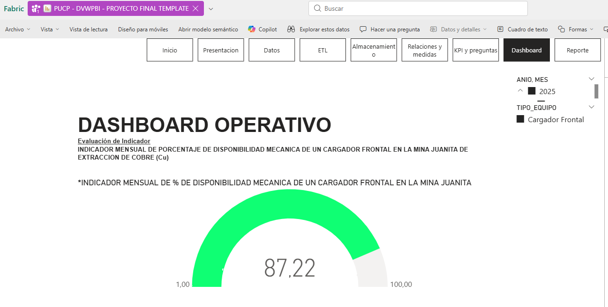
5. Diagrama de Arquitectura
La arquitectura se organiza en capas, integrando fuentes de datos hasta su presentación analítica. Se utiliza la combinación de Azure SQL, ETL, Microsoft Fabric, Power Bi herramientas de análisis para ofrecer la integración, procesamiento y visualización eficaces.
6. Detalle de cada Capas
Capa de Datos
Se utilizó codigo SQL para añadir tablas a la nube.
/****** Object: Table [DVG1].[ALERTA_SENSOR] Script Date: 30/10/2025 14:27:22 ******/
SET ANSI_NULLS ON
GO
SET QUOTED_IDENTIFIER ON
GO
CREATE TABLE [DVG1].[ALERTA_SENSOR](
[ID_ALERTA] [int] NOT NULL,
[ID_SENSOR] [int] NOT NULL,
[VALOR] [decimal](14, 4) NULL,
[THRESHOLD] [decimal](14, 4) NULL,
PRIMARY KEY CLUSTERED
(
[ID_ALERTA] ASC
)WITH (STATISTICS_NORECOMPUTE = OFF, IGNORE_DUP_KEY = OFF, OPTIMIZE_FOR_SEQUENTIAL_KEY = OFF) ON [PRIMARY]
) ON [PRIMARY]
GO
/****** Object: Table [DVG1].[EQUIPOS] Script Date: 30/10/2025 14:27:22 ******/
SET ANSI_NULLS ON
GO
SET QUOTED_IDENTIFIER ON
GO
CREATE TABLE [DVG1].[EQUIPOS](
[ID_EQUIPO] [int] NOT NULL,
[TIPO_EQUIPO] [varchar](100) NULL,
[MARCA] [varchar](100) NULL,
[MODELO] [varchar](100) NULL,
[CAPACIDAD_TON] [decimal](10, 2) NULL,
[ESTADO] [varchar](50) NULL,
[ID_MINA] [int] NOT NULL,
PRIMARY KEY CLUSTERED
(
[ID_EQUIPO] ASC
)WITH (STATISTICS_NORECOMPUTE = OFF, IGNORE_DUP_KEY = OFF, OPTIMIZE_FOR_SEQUENTIAL_KEY = OFF) ON [PRIMARY]
) ON [PRIMARY]
GO
/****** Object: Table [DVG1].[EVENTO_MANTENIMIENTO] Script Date: 30/10/2025 14:27:22 ******/
SET ANSI_NULLS ON
GO
SET QUOTED_IDENTIFIER ON
GO
CREATE TABLE [DVG1].[EVENTO_MANTENIMIENTO](
[ID_EVENTO_MANTENIMIENTO] [int] NOT NULL,
[DURACION] [decimal](10, 2) NULL,
[ID_EQUIPO] [int] NOT NULL,
[FECHA] [date] NOT NULL,
[ID_TIPO_MANTENIMIENTO] [int] NOT NULL,
[ID_TIPO_CAUSA] [int] NULL,
[DESCRIPCION_FALLA] [varchar](240) NULL,
PRIMARY KEY CLUSTERED
(
[ID_EVENTO_MANTENIMIENTO] ASC
)WITH (STATISTICS_NORECOMPUTE = OFF, IGNORE_DUP_KEY = OFF, OPTIMIZE_FOR_SEQUENTIAL_KEY = OFF) ON [PRIMARY]
) ON [PRIMARY]
GO
/****** Object: Table [DVG1].[FECHAS] Script Date: 30/10/2025 14:27:22 ******/
SET ANSI_NULLS ON
GO
SET QUOTED_IDENTIFIER ON
GO
CREATE TABLE [DVG1].[FECHAS](
[FECHA] [date] NOT NULL,
[ANIO] [int] NOT NULL,
[MES] [int] NOT NULL,
[DIA] [int] NOT NULL,
[HORAS_JORNADA] [decimal](5, 2) NULL,
[JORNADAS_MES] [int] NULL,
PRIMARY KEY CLUSTERED
(
[FECHA] ASC
)WITH (STATISTICS_NORECOMPUTE = OFF, IGNORE_DUP_KEY = OFF, OPTIMIZE_FOR_SEQUENTIAL_KEY = OFF) ON [PRIMARY]
) ON [PRIMARY]
GO
/****** Object: Table [DVG1].[MANTENIMIENTO_DETALLE_REPUESTO] Script Date: 30/10/2025 14:27:22 ******/
SET ANSI_NULLS ON
GO
SET QUOTED_IDENTIFIER ON
GO
CREATE TABLE [DVG1].[MANTENIMIENTO_DETALLE_REPUESTO](
[ID_MANTENIMIENTO_DETALLE] [int] NOT NULL,
[CANTIDAD] [decimal](12, 3) NULL,
[ID_EVENTO_MANTENIMIENTO] [int] NOT NULL,
[ID_REPUESTO] [int] NOT NULL,
PRIMARY KEY CLUSTERED
(
[ID_MANTENIMIENTO_DETALLE] ASC
)WITH (STATISTICS_NORECOMPUTE = OFF, IGNORE_DUP_KEY = OFF, OPTIMIZE_FOR_SEQUENTIAL_KEY = OFF) ON [PRIMARY]
) ON [PRIMARY]
GO
/****** Object: Table [DVG1].[MINAS] Script Date: 30/10/2025 14:27:22 ******/
SET ANSI_NULLS ON
GO
SET QUOTED_IDENTIFIER ON
GO
CREATE TABLE [DVG1].[MINAS](
[ID_MINA] [int] NOT NULL,
[NOMBRE_MINA] [varchar](120) NOT NULL,
[ID_TAJO] [int] NULL,
[LEY_CU] [decimal](6, 4) NULL,
PRIMARY KEY CLUSTERED
(
[ID_MINA] ASC
)WITH (STATISTICS_NORECOMPUTE = OFF, IGNORE_DUP_KEY = OFF, OPTIMIZE_FOR_SEQUENTIAL_KEY = OFF) ON [PRIMARY]
) ON [PRIMARY]
GO
/****** Object: Table [DVG1].[MOVIMIENTO_INVENTARIO] Script Date: 30/10/2025 14:27:22 ******/
SET ANSI_NULLS ON
GO
SET QUOTED_IDENTIFIER ON
GO
CREATE TABLE [DVG1].[MOVIMIENTO_INVENTARIO](
[ID_MOVIMIENTO_INVENTARIO] [int] NOT NULL,
[ID_REPUESTO] [int] NOT NULL,
[FECHA] [date] NOT NULL,
[TIPO_MOVIMIENTO_INVENTARIO] [varchar](30) NOT NULL,
[CANTIDAD] [decimal](12, 3) NOT NULL,
[ID_TIPO_MANTENIMIENTO] [int] NULL,
PRIMARY KEY CLUSTERED
(
[ID_MOVIMIENTO_INVENTARIO] ASC
)WITH (STATISTICS_NORECOMPUTE = OFF, IGNORE_DUP_KEY = OFF, OPTIMIZE_FOR_SEQUENTIAL_KEY = OFF) ON [PRIMARY]
) ON [PRIMARY]
GO
/****** Object: Table [DVG1].[OPERADORES] Script Date: 30/10/2025 14:27:22 ******/
SET ANSI_NULLS ON
GO
SET QUOTED_IDENTIFIER ON
GO
CREATE TABLE [DVG1].[OPERADORES](
[ID_OPERADOR] [int] NOT NULL,
[NOMBRE] [varchar](120) NOT NULL,
[TURNO] [varchar](10) NULL,
[ESPECIALIDAD] [varchar](120) NULL,
PRIMARY KEY CLUSTERED
(
[ID_OPERADOR] ASC
)WITH (STATISTICS_NORECOMPUTE = OFF, IGNORE_DUP_KEY = OFF, OPTIMIZE_FOR_SEQUENTIAL_KEY = OFF) ON [PRIMARY]
) ON [PRIMARY]
GO
/****** Object: Table [DVG1].[PRODUCCION] Script Date: 30/10/2025 14:27:22 ******/
SET ANSI_NULLS ON
GO
SET QUOTED_IDENTIFIER ON
GO
CREATE TABLE [DVG1].[PRODUCCION](
[ID_PRODUCCION] [int] NOT NULL,
[ID_EQUIPO] [int] NOT NULL,
[FECHA] [date] NOT NULL,
[TONELADAS_EXTRAIDAS] [decimal](14, 3) NULL,
[ID_OPERADOR] [int] NULL,
[TURNO] [varchar](10) NULL,
PRIMARY KEY CLUSTERED
(
[ID_PRODUCCION] ASC
)WITH (STATISTICS_NORECOMPUTE = OFF, IGNORE_DUP_KEY = OFF, OPTIMIZE_FOR_SEQUENTIAL_KEY = OFF) ON [PRIMARY]
) ON [PRIMARY]
GO
/****** Object: Table [DVG1].[REPUESTOS] Script Date: 30/10/2025 14:27:22 ******/
SET ANSI_NULLS ON
GO
SET QUOTED_IDENTIFIER ON
GO
CREATE TABLE [DVG1].[REPUESTOS](
[ID_REPUESTO] [int] NOT NULL,
[NOMBRE_REPUESTO] [varchar](120) NOT NULL,
[DESCRIPCION] [varchar](240) NULL,
[COSTO_REPUESTO] [decimal](12, 2) NULL,
PRIMARY KEY CLUSTERED
(
[ID_REPUESTO] ASC
)WITH (STATISTICS_NORECOMPUTE = OFF, IGNORE_DUP_KEY = OFF, OPTIMIZE_FOR_SEQUENTIAL_KEY = OFF) ON [PRIMARY]
) ON [PRIMARY]
GO
/****** Object: Table [DVG1].[SENSORES] Script Date: 30/10/2025 14:27:22 ******/
SET ANSI_NULLS ON
GO
SET QUOTED_IDENTIFIER ON
GO
CREATE TABLE [DVG1].[SENSORES](
[ID_SENSOR] [int] NOT NULL,
[TIPO_SENSOR] [varchar](80) NULL,
[ID_EQUIPO] [int] NOT NULL,
PRIMARY KEY CLUSTERED
(
[ID_SENSOR] ASC
)WITH (STATISTICS_NORECOMPUTE = OFF, IGNORE_DUP_KEY = OFF, OPTIMIZE_FOR_SEQUENTIAL_KEY = OFF) ON [PRIMARY]
) ON [PRIMARY]
GO
/****** Object: Table [DVG1].[TAJOS] Script Date: 30/10/2025 14:27:22 ******/
SET ANSI_NULLS ON
GO
SET QUOTED_IDENTIFIER ON
GO
CREATE TABLE [DVG1].[TAJOS](
[ID_TAJO] [int] NOT NULL,
[NOMBRE_TAJO] [varchar](120) NOT NULL,
[ID_MINA] [int] NOT NULL,
PRIMARY KEY CLUSTERED
(
[ID_TAJO] ASC
)WITH (STATISTICS_NORECOMPUTE = OFF, IGNORE_DUP_KEY = OFF, OPTIMIZE_FOR_SEQUENTIAL_KEY = OFF) ON [PRIMARY]
) ON [PRIMARY]
GO
/****** Object: Table [DVG1].[TIPO_CAUSAL_MANT] Script Date: 30/10/2025 14:27:22 ******/
SET ANSI_NULLS ON
GO
SET QUOTED_IDENTIFIER ON
GO
CREATE TABLE [DVG1].[TIPO_CAUSAL_MANT](
[ID_TIPO_CAUSA] [int] NOT NULL,
[NOMBRE] [varchar](120) NULL,
[CRITICIDAD] [varchar](50) NULL,
PRIMARY KEY CLUSTERED
(
[ID_TIPO_CAUSA] ASC
)WITH (STATISTICS_NORECOMPUTE = OFF, IGNORE_DUP_KEY = OFF, OPTIMIZE_FOR_SEQUENTIAL_KEY = OFF) ON [PRIMARY]
) ON [PRIMARY]
GO
/****** Object: Table [DVG1].[TIPO_MANTENIMIENTO] Script Date: 30/10/2025 14:27:22 ******/
SET ANSI_NULLS ON
GO
SET QUOTED_IDENTIFIER ON
GO
CREATE TABLE [DVG1].[TIPO_MANTENIMIENTO](
[ID_TIPO_MANTENIMIENTO] [int] NOT NULL,
[NOMBRE] [varchar](120) NOT NULL,
PRIMARY KEY CLUSTERED
(
[ID_TIPO_MANTENIMIENTO] ASC
)WITH (STATISTICS_NORECOMPUTE = OFF, IGNORE_DUP_KEY = OFF, OPTIMIZE_FOR_SEQUENTIAL_KEY = OFF) ON [PRIMARY]
) ON [PRIMARY]
GO
Capa ETL
Con Microsoft Fabric (Dataflows y Pipelines) se integra los datos hacia el Data Warehouse, es un proceso de extracción, transformación y carga de datos.
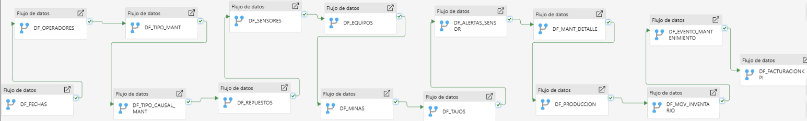
Capa de Data Warehouse (DW)
En Microsoft Fabric se procedió a relacionar las tablas de acuerdo a nuestro modelo de datos de muchos a uno y uno a muchos.
En Modelo semantico de Fabric se visualiza nuestras tablas.
Capa de Presentación
Se procedio a realizar nuestro reportes en Fabric.
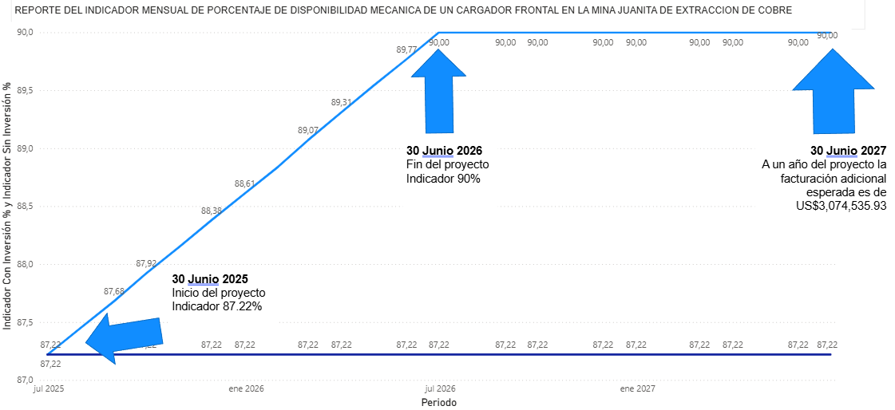
Al 30 de junio de 2025, el INDICADOR MENSUAL DE PORCENTAJE DE DISPONIBILIDAD MECANICA DE UN CARGADOR FRONTAL EN MINA, tiene un valor de 87.22% (semaforo verde).
Este indicador tiene un porcentaje optimo, pero se requiere incrementas la capacidad hasta 90%, lo que requiere un incremento de 2.78%, para generar una facturacion adicional de $256,211.33 mensuales de acuerdo al precio promedio del cobre en el periodo de proyección.
"Para lograr este objetivo, incrementar el valor de este indicador hasta llegar al 90% (semaforo verde) para el 30 de Junio de 2026, se plantea implementar dos estrategias en el método de trabajo, a traves de un mantenimiento Programado y Preventivo mediante sensores IoT, a su vez, optimizar los recursos y tiempos de respuesta, con la creación de un inventario mínimo y capacitaciones para la interpretacion de datos de los sensores.
El costo total de implementacion de esta estrategia es de US$275,000 y se estima que al cumplir este objetivo en la fecha propuesta, la facturacion adicional mensual sera de $256,211.33, lo cual sumaria un total de $3,074,535.93 de facturacion adicional durante el primero año posterior a la fecha de cumplimiento del objetivo.
Preguntas de análisis KPI
¿Cómo varió mes a mes el Indicador mensual de porcentaje de disponibilidad mecánica del cargador frontal en la Mina Juanita de extracción de cobre del mes 1 al mes 6 (enero a junio) 2025?
¿Cómo se comparó el Indicador mensual de toneladas extraídas de cobre del cargador frontal en la Mina Juanita con el Indicador mensual de porcentaje de disponibilidad mecánica del cargador frontal en la Mina Juanita de extracción de cobre durante el mes 1 al mes 6 (enero a junio) 2025?
¿Cómo se relacionó el Indicador mensual de horas de mantenimiento del cargador frontal en la Mina Juanita con el Indicador mensual de porcentaje de disponibilidad mecánica del cargador frontal en la Mina Juanita de extracción de cobre durante junio 2025?
¿Cómo se comparó el Indicador mensual de porcentaje de disponibilidad mecánica del cargador frontal en la Mina Juanita de extracción de cobre con el promedio mensual de disponibilidad mecánica de todos los equipos de extracción de cobre de la Mina Juanita durante junio 2025?
¿Cómo se relacionó el Indicador mensual de tiempo total por tipo de causa de mantenimiento con el Indicador mensual de porcentaje de disponibilidad mecánica del cargador frontal en la Mina Juanita de extracción de cobre durante junio 2025?
¿Cómo se comparó el Indicador mensual de duración promedio de mantenimiento con el Indicador mensual de porcentaje de disponibilidad mecánica del cargador frontal en la Mina Juanita de extracción de cobre durante el mes 1 al mes 6 (enero a junio) 2025?
¿Cómo se comparó el Indicador mensual de porcentaje de disponibilidad mecánica del cargador frontal en la Mina Juanita de extracción de cobre con el Indicador mensual de horas operativas registradas durante el mes 1 al mes 6 (enero a junio) 2025?
¿Cómo se comparó el Indicador mensual de porcentaje de disponibilidad mecánica del cargador frontal en la Mina Juanita de extracción de cobre con el Indicador mensual de eficiencia operativa durante junio 2025?
¿Cómo se comparó el Indicador mensual de porcentaje de disponibilidad mecánica del cargador frontal de la Mina Juanita de extracción de cobre frente al promedio mensual de disponibilidad de la flota de equipos durante el mes 1 al mes 6 (enero a junio) 2025?
¿Cómo se comparó el Indicador mensual de cantidad de alertas por tipo de sensor con el Indicador mensual de porcentaje de disponibilidad mecánica del cargador frontal en la Mina Juanita de extracción de cobre durante junio 2025?
MEDIDAS CREADAS
Indicador mensual de % de disponibilidad mecánica de un cargador frontal en la Mina Juanita:
CALCULATE(
AVERAGEX(
VALUES('DVG1 EQUIPOS'[ID_EQUIPO]),
[*INDICADOR MENSUAL DE % DE DISPONIBILIDAD MECANICA DE UN CARGADOR FRONTAL EN LA MINA JUANITA]
),
VALUES('DVG1 FECHAS'[MES])
)
VAR IndicadorActual = [*INDICADOR MENSUAL DE % DE DISPONIBILIDAD MECANICA DE UN CARGADOR FRONTAL EN LA MINA JUANITA]
VAR IndicadorAnterior = CALCULATE(
[*INDICADOR MENSUAL DE % DE DISPONIBILIDAD MECANICA DE UN CARGADOR FRONTAL EN LA MINA JUANITA],
PREVIOUSMONTH('DVG1 FECHAS'[FECHA])
)
RETURN DIVIDE(IndicadorActual - IndicadorAnterior, IndicadorAnterior, 0) * 100
Medidas para nuestro reporte:
Monto de Facturación Con Inversión = SUM('DVG1 FacturacionKPI'[Facturacion_Con_Inversion])
Monto de Facturación Sin Inversión = SUM('DVG1 FacturacionKPI'[Facturacion_Sin_Inversion])
Facturación Adicional = SUM('DVG1 FacturacionKPI'[Facturacion_Adicional])
Indicador Con Inversión % = AVERAGE('DVG1 FacturacionKPI'[Indicador_Con_Inversion])
Indicador Sin Inversión % = AVERAGE('DVG1 FacturacionKPI'[Indicador_Sin_Inversion])
Resultados, KPIs y Gráficos
¿Cómo varió mes a mes el Indicador mensual de porcentaje de disponibilidad mecánica del cargador frontal en la Mina Juanita de extracción de cobre del mes 1 al mes 6 (enero a junio) 2025?
Indicador mensual de porcentaje de disponibilidad mecánica del cargador frontal en la Mina Juanita de extracción de cobre
¿Cómo se comparó el Indicador mensual de toneladas extraídas de cobre del cargador frontal en la Mina Juanita con el Indicador mensual de porcentaje de disponibilidad mecánica del cargador frontal en la Mina Juanita de extracción de cobre durante el mes 1 al mes 6 (enero a junio) 2025?
Indicador mensual de porcentaje de disponibilidad mecánica del cargador frontal en la Mina Juanita de extracción de cobre
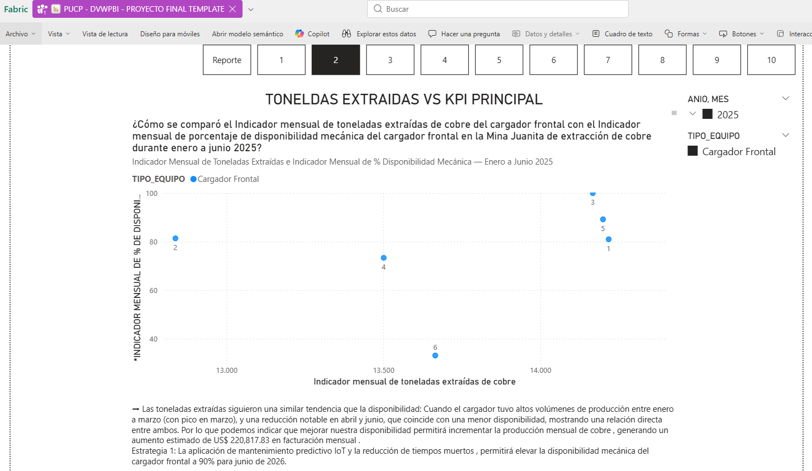
¿Cómo se relacionó el Indicador mensual de horas de mantenimiento del cargador frontal en la Mina Juanita con el Indicador mensual de porcentaje de disponibilidad mecánica del cargador frontal en la Mina Juanita de extracción de cobre durante junio 2025?
Indicador mensual de porcentaje de disponibilidad mecánica del cargador frontal en la Mina Juanita de extracción de cobre
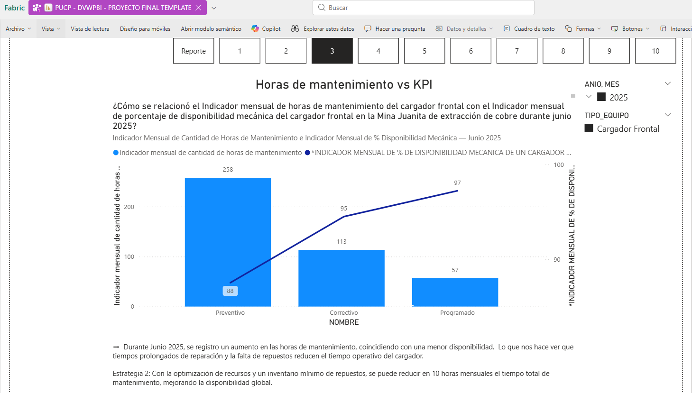
¿Cómo se comparó el Indicador mensual de porcentaje de disponibilidad mecánica del cargador frontal en la Mina Juanita de extracción de cobre con el promedio mensual de disponibilidad mecánica de todos los equipos de extracción de cobre de la Mina Juanita durante junio 2025?
Indicador mensual de porcentaje de disponibilidad mecánica del cargador frontal en la Mina Juanita de extracción de cobre
¿Cómo se relacionó el Indicador mensual de tiempo total por tipo de causa de mantenimiento con el Indicador mensual de porcentaje de disponibilidad mecánica del cargador frontal en la Mina Juanita de extracción de cobre durante junio 2025?
Indicador mensual de porcentaje de disponibilidad mecánica del cargador frontal en la Mina Juanita de extracción de cobre
¿Cómo se comparó el Indicador mensual de duración promedio de mantenimiento con el Indicador mensual de porcentaje de disponibilidad mecánica del cargador frontal en la Mina Juanita de extracción de cobre durante el mes 1 al mes 6 (enero a junio) 2025?
Indicador mensual de porcentaje de disponibilidad mecánica del cargador frontal en la Mina Juanita de extracción de cobre
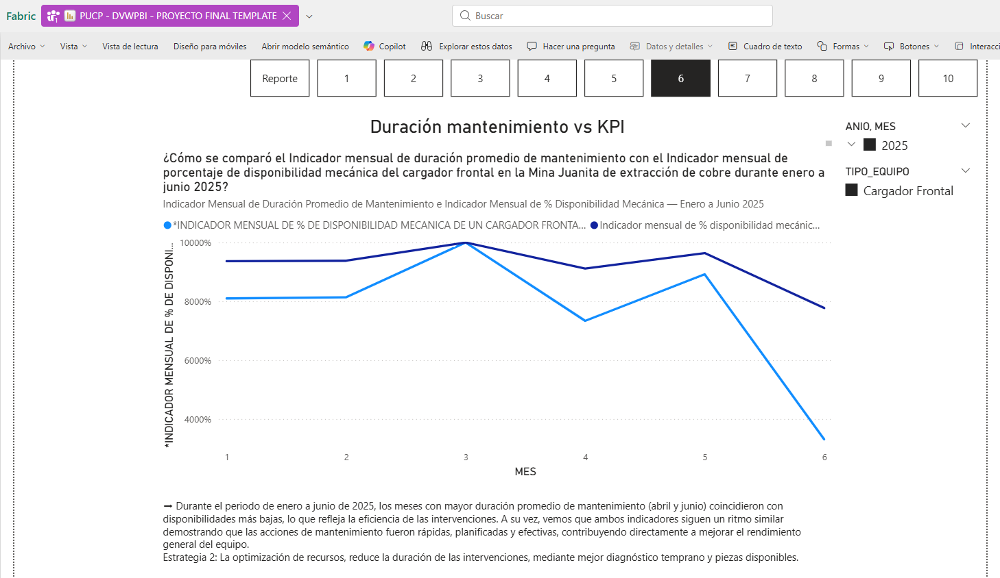
¿Cómo se comparó el Indicador mensual de porcentaje de disponibilidad mecánica del cargador frontal con el Indicador mensual de horas operativas registradas durante enero a junio 2025?
Indicador mensual de porcentaje de disponibilidad mecánica del cargador frontal en la Mina Juanita de extracción de cobre
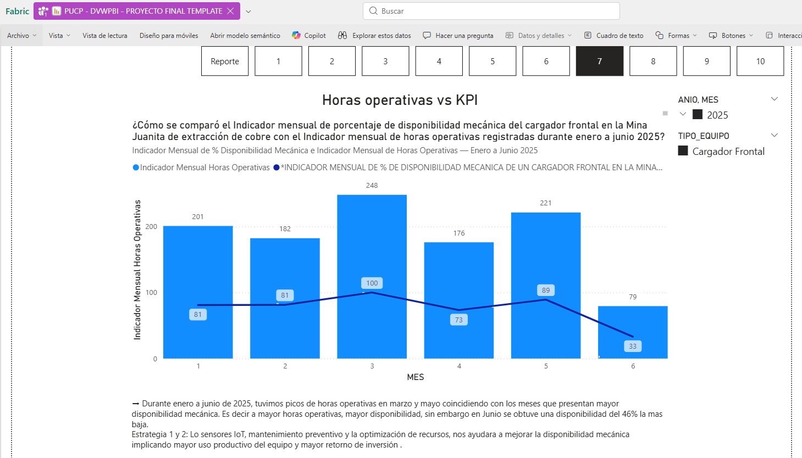
¿Cómo se comparó el Indicador mensual de porcentaje de disponibilidad mecánica del cargador frontal en la Mina Juanita de extracción de cobre con el Indicador mensual de horas operativas registradas durante el mes 1 al mes 6 (enero a junio) 2025?
Indicador mensual de porcentaje de disponibilidad mecánica del cargador frontal en la Mina Juanita de extracción de cobre
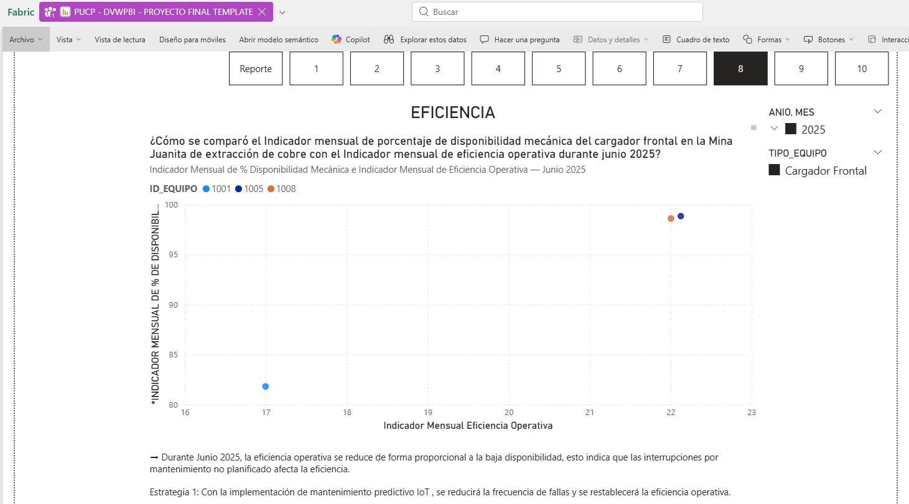
¿Cómo se comparó el Indicador mensual de porcentaje de disponibilidad mecánica del cargador frontal en la Mina Juanita de extracción de cobre con el Indicador mensual de eficiencia operativa durante junio 2025?
Indicador mensual de porcentaje de disponibilidad mecánica del cargador frontal en la Mina Juanita de extracción de cobre
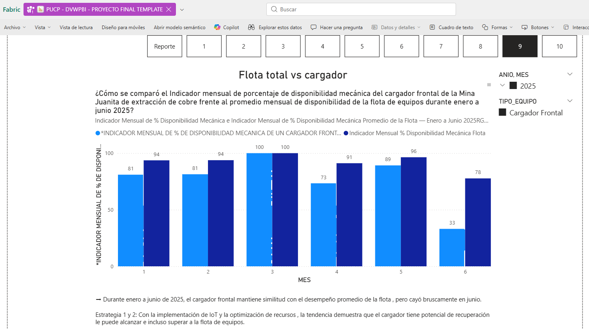
¿Cómo se comparó el Indicador mensual de cantidad de alertas por tipo de sensor con el Indicador mensual de porcentaje de disponibilidad mecánica del cargador frontal en la Mina Juanita de extracción de cobre durante junio 2025?
Indicador mensual de porcentaje de disponibilidad mecánica del cargador frontal en la Mina Juanita de extracción de cobre
¿Cómo varió el monto de facturacion con y sin inversión en Junio 2025 al Junio 2027?
La gráfica evidencia resultados notables entre los escenarios con inversión y sin inversión . Los ingresos aumentan progresivamente en el periodo analizado, demostrando que invertir en el proyecto genera una rentabilidad sólida y sostenida .
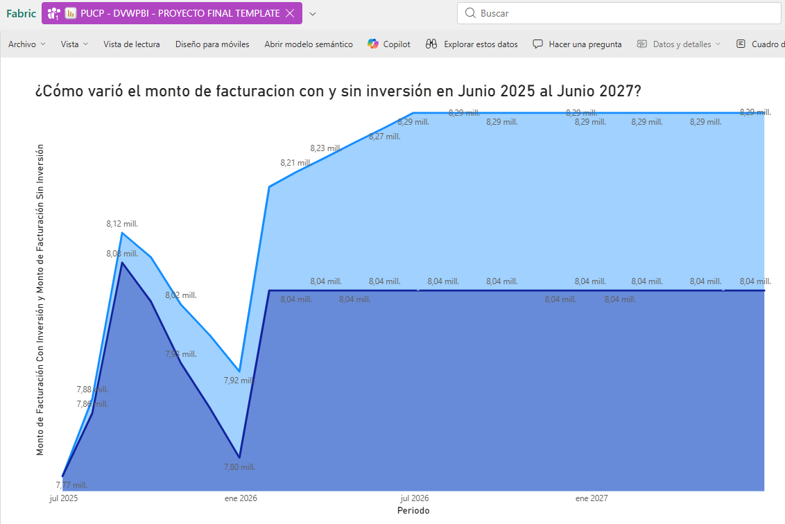
¿Cuál es el Top 1 de toneladas extraídas con el cargador frontal por operador y especialidad en el año 2025?
Durante el año 2025, la operadora Carla Vásquez , con la especialidad de Supervisora , alcanzó el mayor volumen de extracción con 7.96 mil toneladas , posicionándose como el Top 1 . Este resultado destaca su alto nivel de desempeño y la relevancia de la capacitación técnica especializada para maximizar la eficiencia de los operadores y equipos en campo.
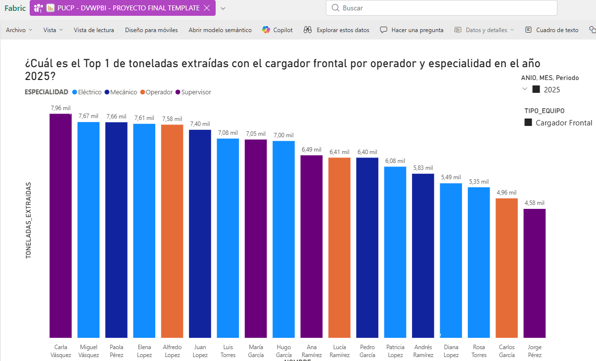
¿Que marcas de equipos tuvieron mayor suma de mantenimientos durante el año 2025?
En 2025, la marca Caterpillar concentró la mayor cantidad de mantenimientos con 167 intervenciones, superando ampliamente a Sandvik (39) y Komatsu (25) . Esta diferencia evidencia que Caterpillar fue la flota más utilizada y exigida operativamente , mientras que las marcas con menor incidencia mantienen niveles bajos de intervención.
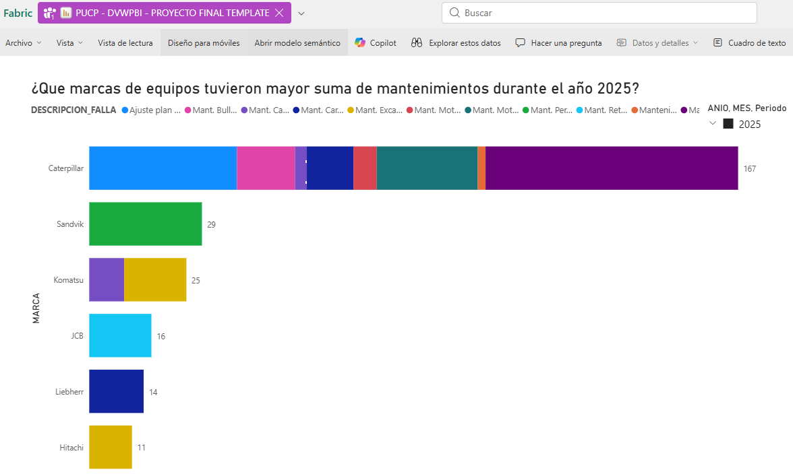
¿Que tipo de mantenimiento sumo mas horas de duración en el año 2025?
El mantenimiento preventivo registró la mayor cantidad de horas acumuladas durante el año 2025 , reflejando la implementación de medidas orientadas a reducir fallas y prevenir averías, buscando optimizar la disponibilidad de los equipos y su operatividad.
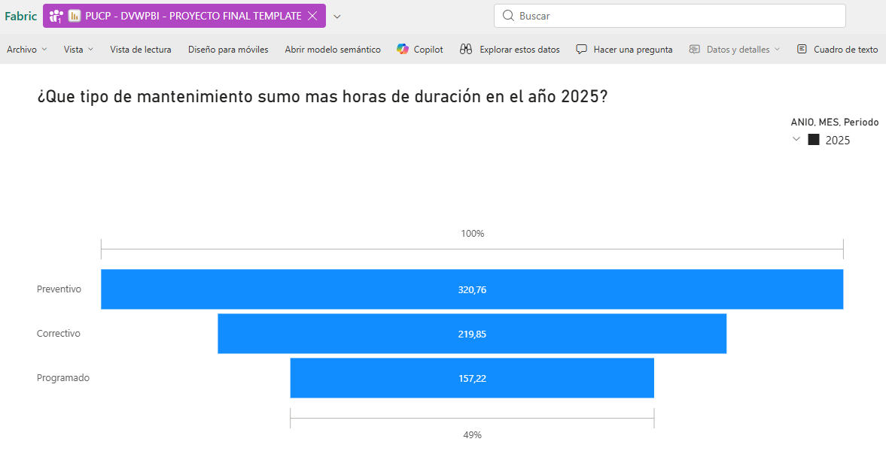
¿Cuál es el Top 1 de tipo de sensor mas utilizado en el año 2025?
Durante el año 2025, el Top 1 de sensores más utilizados correspondió a los sensores de presión , con 627 registros. Esto evidencia una mayor atención al monitoreo de variables críticas, buscando con ello un sistema más preciso y confiable.
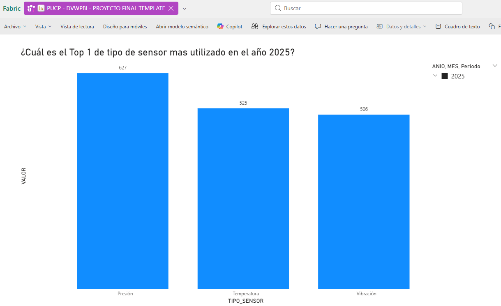
Conclusiones
Nuestro proyecto nos permitió evaluar las variaciones del Indicador de disponibilidad mecánica del cargador frontal en la Mina Juanita de extracción de cobre durante el periodo de enero a junio de 2025, asi como monitorear, comparar y relacionar con nuestros demas indicadores secundarios.
Los resultados demuestran cómo las horas de mantenimiento, operación y fallas influyen directamente en el nivel de disponibilidad mecánica. Además, al comparar con la flota de equipos nos permite mejorar en la gestión del mantenimiento preventivo y planificado.
Nuestras estrategias implementadas fueron efectivas para tomar decisiones basada en datos y fortalecer el control operacional del área de mantenimiento .
Por lo tanto, podemos concluir en que nuestro proyecto contribuyó a una visión más precisa y analítica de la disponibilidad mecánica del cargador frontal en la Mina Juanita, permitiendo ver la importancia de una gestión de mantenimiento preventiva para optimizar la productividad y reducir los tiempos de ocio.